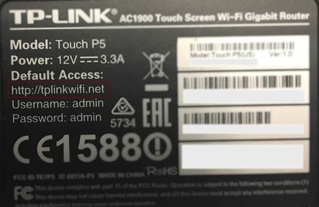
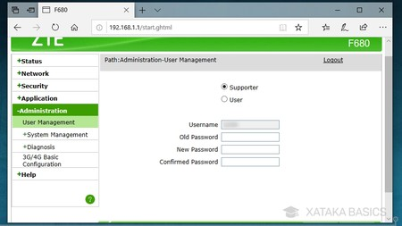

Proteger tu Router

Manual Interactivo Paso a Paso
El Corazón: El Router
Guía definitiva para blindar la puerta principal de su internet.
¿Por qué es un riesgo?
El router es el policía que vigila quién entra y sale de su casa digital. Si el policía usa una llave que todos conocen, cualquiera puede entrar sin permiso.
Paso 1: Cambie la Llave de Fábrica
No use la clave de la etiqueta
Todos los routers tienen una etiqueta pegada detrás con una contraseña llamada "Admin Password" o "Clave de Administrador".
- Los hackers tienen listas con todas estas claves.
- Dejarla así es como dejar la llave bajo el tapete.
- Acción: Entre a la configuración y cámbiela por una frase larga y única.

Cómo entrar a la configuración
Conéctese: Asegúrese de estar conectado al Wi-Fi de su casa.
Abra el navegador: En su computadora o celular, abra Chrome o Safari y escriba los números 192.168.1.1 (o los que indique su etiqueta).
Inicie sesión: Use los datos de la etiqueta por última vez para entrar al menú principal.
Busque "Seguridad": Localice el apartado de "Cambiar contraseña de Administrador".
Paso 2: Use la Red de Invitados
Aísle sus aparatos inseguros
Su router permite crear una segunda red Wi-Fi. Úsela para:
- Visitas que llegan a casa.
- Focos, cámaras y otros aparatos inteligentes.

Mantenimiento Vital
1 Vez al mes: Actualice el "Firmware"
El firmware es el cerebro del router. Los fabricantes lanzan "parches" para cerrar agujeros que los hackers descubren.
En el menú de configuración, busque el botón "Check for Updates" o "Actualizar Sistema". Presionarlo le dará un escudo nuevo contra las últimas amenazas.
¡Red Protegida!
Su router ahora es una muralla contra intrusos.
Recuerde: Si tiene dudas, consulte con su proveedor de internet.